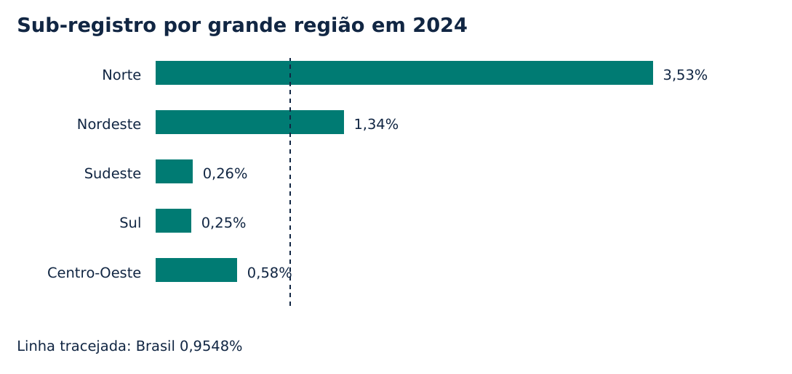
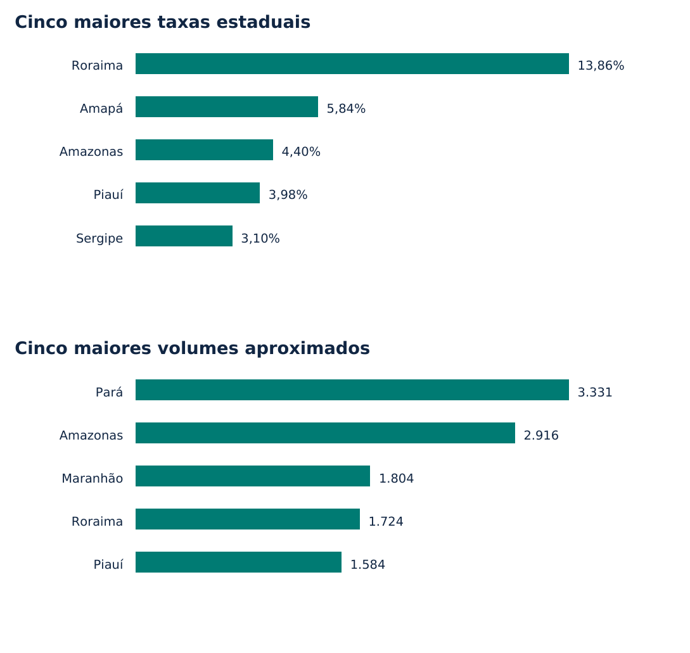

Sub-registro de nascimento e prioridades territoriais no Brasil
Evidências de 2022 a 2024 e uma proposta de monitoramento
Osmarsrjunior · Registro em Foco · Setembro de 2026
Estudo independente de pesquisa aplicada. Versão 1.0. Sem vínculo institucional com IBGE, MDHC ou PNUD. Preparado com assistência de inteligência artificial na programação e redação. Não submetido a avaliação por pares.
Resumo
Este estudo investiga como estimativas territoriais de sub-registro de nascimento podem informar o planejamento de políticas públicas. Foram analisadas as tabelas agregadas do Instituto Brasileiro de Geografia e Estatística para 2022, 2023 e 2024, preservando os arquivos revisados disponíveis em setembro de 2026. A taxa nacional passou de 1,3111% para 0,9548%, uma redução de 0,3563 ponto percentual ou 27,18% em termos relativos. Em 2024, Roraima apresentou a maior taxa estadual, de 13,8634%, enquanto o Pará concentrou o maior volume aproximado de eventos sub-registrados, calculado a partir das taxas e dos totais publicados. A distinção entre intensidade relativa e volume sugere critérios complementares de investigação territorial. Propõe-se um arranjo de monitoramento que combina resultados populacionais, qualidade dos dados, acesso aos serviços e responsabilidades institucionais. A análise é descritiva: não estima efeitos causais das políticas, não identifica indivíduos e não mede o estoque de pessoas sem documentação. O trabalho oferece código reproduzível, painel exploratório e instrumentos técnicos para discussão.
Palavras-chave: registro civil; sub-registro de nascimento; desigualdade territorial; indicadores; políticas públicas.
1 Introdução
O registro civil de nascimento conecta a existência jurídica da pessoa a uma rede de serviços e documentos. A formulação de políticas nessa área exige distinguir a ocorrência do nascimento, seu registro e a obtenção posterior de documentos. Uma melhora no registro de nascimentos recentes não informa, por si só, quantas pessoas de diferentes idades continuam enfrentando barreiras documentais.
O Edital nº 04/2026 do projeto BRA/23/024 estabelece uma demanda de apoio técnico à formulação do Segundo Plano da Política Nacional de Registro Civil de Nascimento e Ampliação do Acesso à Documentação Básica. Seus produtos abrangem diagnóstico, diretrizes, metas, indicadores, governança, participação e subsídios normativos [1]. O presente estudo utiliza essa demanda como referência temática para um exercício independente de pesquisa aplicada.
O Acórdão nº 2758/2025 do TCU, Plenário, recomenda ao MDHC considerar metas e resultados, indicadores relevantes, avaliação periódica e definição dos papéis dos atores. Também recomenda indicadores sobre demandas, tempos de atendimento e sucesso dos pedidos de registro tardio e segunda via [2, itens 9.2.1 e 9.3.4]. Essas duas dimensões orientam o argumento: acompanhar a cobertura do registro e acompanhar a experiência de acesso aos serviços.
A pergunta de pesquisa é: como as diferenças territoriais nas estimativas de sub-registro podem orientar prioridades e instrumentos de monitoramento? O objetivo consiste em descrever a trajetória recente, comparar critérios de seleção de territórios e traduzir os achados em uma proposta verificável de acompanhamento. Não se pretende formular a versão oficial de um plano nacional nem substituir pactuação federativa e participação social.
2 Dados e método
2.1 Fontes e recorte
A fonte quantitativa é a coleção Estimativas de Sub-Registro de Nascimentos e Óbitos do IBGE. O núcleo analítico utiliza a Tabela 1.1 de cada ano, com total estimado de nascidos vivos, percentual de sub-registro do IBGE e percentual de subnotificação do Ministério da Saúde, segundo a residência da mãe [3–5]. Foram preservados o Brasil, as cinco grandes regiões, as 27 unidades da Federação e a categoria de residência ignorada.
Os arquivos de 2022 e 2023 incorporam a revisão identificada no nome dos arquivos como 20260610. A edição de 2024 foi obtida no mesmo dia de consulta, 11 de setembro de 2026. Assim, a comparação utiliza as versões disponíveis nessa data, e não números de releases antigos. Novas revisões podem alterar os resultados. Os endereços, datas e hashes SHA-256 estão registrados em data/sources.json.
A Tabela 1.2 de 2024 foi extraída como base municipal complementar. Ela contém 5.570 linhas com códigos municipais. Três registros apresentam marcadores de ausência para as medidas analisadas: Nantes, Peritiba e Anhanguera. Esses valores foram mantidos vazios, sem substituição por zero. As Tabelas 1.3 e 1.4 sustentam uma análise complementar por idade da mãe e local do nascimento. Essas classificações não foram cruzadas com a base estadual para evitar fabricar relações que não estão presentes nas tabelas utilizadas.
2.2 Medidas e cálculos
As taxas publicadas são utilizadas diretamente em unidades percentuais. O cálculo do volume aproximado de eventos sub-registrados segue V = N × p / 100, em que N é o total estimado de nascimentos e p é o percentual publicado. V é uma medida derivada, sujeita aos arredondamentos de ambos os insumos. Não corresponde a uma contagem observada de indivíduos localizáveis.
A variação em pontos percentuais corresponde à taxa de 2024 menos a taxa de 2022. A variação relativa corresponde a 100 × (taxa de 2024 / taxa de 2022 − 1). O projeto preserva a precisão original nos dados e apresenta arredondamentos na comunicação. O agregado nacional é o publicado pelo IBGE; não é calculado pela média simples das taxas estaduais.
Foram comparadas duas ordenações estaduais: a taxa de sub-registro e o volume aproximado. A primeira informa a intensidade relativa do problema na população de nascimentos estimados. A segunda aproxima sua escala absoluta. Não foi criado um índice composto, pois a escolha de pesos envolveria valores e prioridades não definidos por esta pesquisa.
2.3 Procedimentos de qualidade
O processamento automatizado lê os arquivos XLSX dentro dos ZIPs originais, separa linhas de dados e notas e utiliza códigos para identificar estados. As verificações incluem integridade dos arquivos, unicidade das chaves, presença das 27 unidades em cada ano, limites de taxas e reconciliação entre totais estaduais, residência ignorada e Brasil. As pequenas diferenças de centésimos nos totais são compatíveis com a precisão publicada.
O projeto reutiliza as estimativas produzidas pelo IBGE, cuja abordagem envolve o pareamento de registros e informações de saúde [6]. Não reproduz o pareamento de microdados nem reestima o modelo estatístico. As tabelas selecionadas não fornecem intervalos de incerteza para todos os valores utilizados; portanto, diferenças de posição não são tratadas como diferenças estatisticamente significativas. A série de três anos sustenta uma descrição recente, insuficiente para extrapolação automática de tendências.
3 Resultados
3.1 Redução nacional no período
A taxa nacional foi de 1,3111% em 2022, 1,0496% em 2023 e 0,9548% em 2024. O movimento representa redução de 0,3563 ponto percentual entre os extremos, equivalente a 27,18% da taxa inicial. Aplicando as taxas aos totais estimados, o volume aproximado passa de 33.755 para 22.902 eventos anuais. Essa diferença combina mudanças na taxa e no número de nascimentos estimados, que caiu de aproximadamente 2,575 milhões para 2,399 milhões.
| Ano | Nascimentos estimados | Sub-registro (%) | Volume aproximado |
|---|---|---|---|
| 2022 | 2.574.556 | 1,3111 | 33.755 |
| 2023 | 2.548.631 | 1,0496 | 26.750 |
| 2024 | 2.398.634 | 0,9548 | 22.902 |
Fonte: IBGE, Tabela 1.1 de 2022, 2023 e 2024. Volume calculado pelo projeto. Valores de nascimentos e volumes arredondados para apresentação.
A trajetória nacional não permite atribuir a redução a uma ação específica. Não há grupo de comparação, identificação de exposição às intervenções ou controle de fatores concorrentes neste desenho. Sua utilidade é estabelecer uma referência temporal e revelar a necessidade de examinar os componentes territoriais do agregado.
3.2 Diferenças regionais e estaduais
Em 2024, a taxa foi de 3,5280% no Norte, 1,3358% no Nordeste, 0,5801% no Centro-Oeste, 0,2646% no Sudeste e 0,2544% no Sul. Doze unidades da Federação ficaram acima do percentual nacional. Esses números descrevem heterogeneidade territorial, sem explicar isoladamente seus determinantes.

Figura 1. Taxa de sub-registro por grande região em 2024. Fonte: IBGE, Tabela 1.1. A linha de referência corresponde ao Brasil, 0,9548%.
As cinco maiores taxas estaduais foram observadas em Roraima, Amapá, Amazonas, Piauí e Sergipe. A taxa de Roraima, 13,8634%, deve motivar investigação contextual sobre atendimento e cobertura das bases. A tabela agregada não permite atribuir esse resultado a migração, distância, pertencimento étnico ou qualquer outro mecanismo específico.
| Estado | Taxa em 2024 (%) | Volume aproximado |
|---|---|---|
| Roraima | 13,8634 | 1.724 |
| Amapá | 5,8405 | 731 |
| Amazonas | 4,3987 | 2.916 |
| Piauí | 3,9814 | 1.584 |
| Sergipe | 3,0981 | 853 |
Fonte: IBGE, Tabela 1.1 de 2024. Seleção pelas cinco maiores taxas, não pelos volumes.
3.3 Taxa e volume produzem prioridades distintas
Quando a ordenação considera o volume aproximado, aparecem Pará, Amazonas, Maranhão, Roraima e Piauí. Esses estados correspondem a aproximadamente 49,60% do volume nacional derivado. O Pará apresenta taxa de 2,8067%, inferior à de Roraima, mas cerca de 3.331 eventos estimados, diante de aproximadamente 1.724 em Roraima. A maior população de nascimentos estimados altera a escala do problema.

Figura 2. Ordenações estaduais por taxa e volume aproximado em 2024. Fonte: IBGE, Tabela 1.1, e cálculos do projeto. Cada painel apresenta sua própria unidade de medida.
Uma seleção baseada apenas no volume pode deixar de examinar territórios com elevadas taxas e menor população. Uma seleção exclusivamente proporcional pode reduzir a atenção a locais onde um percentual menor ainda representa muitos eventos. A proposta é usar duas listas complementares como ponto de partida para diagnóstico, explicitando o critério em vez de produzir uma classificação única de desempenho.
3.4 Recortes complementares
Na Tabela 1.3 de 2024, os nascimentos de mães com menos de 15 anos apresentam taxa de 6,09508%. Na Tabela 1.4, a taxa é de 0,8265% para nascimentos em hospital e de 9,2573% para nascimentos em domicílio. Os achados indicam grupos de observação relevantes para estudos posteriores, sem comprovar o efeito da idade ou do local do parto sobre o registro.
Os denominadores e perfis desses grupos diferem. A comparação não autoriza atribuir o problema às mães, recomendar intervenções individuais ou presumir que uma mudança no local de nascimento produziria a diferença observada. O uso adequado consiste em orientar perguntas sobre fluxos de atendimento e barreiras, a serem investigadas com métodos e participação apropriados.
4 Da análise ao monitoramento
Propõe-se organizar o acompanhamento em três camadas. A primeira utiliza a taxa e o volume aproximado como medidas populacionais anuais. A segunda examina os processos de atendimento, com tempo até resolução, conclusão de encaminhamentos e motivos de pendência. A terceira acompanha a qualidade da informação, a atualização das fontes e o funcionamento dos mecanismos de governança.
Somente a primeira camada dispõe de valores calculados neste projeto. As demais são especificações para eventual coleta administrativa. Não se atribuem valores a indicadores operacionais sem registros de atendimento. Essa separação permite uma matriz utilizável sem apresentar suposições como resultados.
Para iniciar a investigação territorial, sugere-se discutir as cinco maiores taxas e os cinco maiores volumes, preservando os territórios comuns às duas listas e justificando quaisquer inclusões adicionais. O número cinco é uma convenção de exploração do portfólio, não um limiar oficial de elegibilidade. A escolha final deve incorporar recursos disponíveis, conhecimento local, cobertura informacional e participação dos grupos afetados.
O painel contém uma simulação baseada em redução relativa constante da taxa. Para uma redução anual r, o valor no horizonte n corresponde a p inicial × (1 - r) elevado a n. A ferramenta serve para visualizar a escala de uma ambição de redução. Seus resultados não são previsão, meta pactuada ou avaliação de custo. Um cenário que parte de 2022 inclui anos já observados; nesse caso, deve ser lido como exercício contrafactual ilustrativo, nunca como projeção atual.
As metas operacionais precisam ser negociadas com os atores responsáveis. A matriz complementar propõe campos para linha de base, denominador, fonte, frequência, responsável sugerido, risco e revisão. Um responsável sugerido não constitui atribuição legal. A implementação dependeria de arranjos formalmente definidos e de validação das competências de cada instituição.
5 Limitações e agenda de pesquisa
O estudo utiliza agregados, o que impede identificar indivíduos, avaliar trajetórias documentais e inferir relações individuais a partir de diferenças territoriais. O indicador de sub-registro de nascimentos recentes não mede o estoque de pessoas sem certidão nem as dificuldades de acesso a segunda via, CPF ou outros documentos. Uma avaliação da documentação básica demanda indicadores próprios.
Revisões estatísticas podem alterar níveis e comparações. O projeto registra a versão das fontes, mas não resolve limitações do modelo do produtor. Arredondamentos afetam volumes derivados e somas. Percentuais municipais associados a poucos nascimentos podem variar intensamente e exigem cuidado adicional. A ausência de três valores municipais foi preservada e identificada.
A janela 2022–2024 é curta. O desenho não demonstra que a redução será mantida, não separa mudanças reais de eventuais efeitos informacionais e não mede impacto de unidades interligadas, mutirões ou estratégias itinerantes. Um estudo causal exigiria dados sobre implantação, intensidade, seleção e exposição às ações, além de um desenho de comparação defensável.
Também não houve entrevistas, consulta pública ou validação com gestores e usuários. O dossiê contém um protocolo para essa etapa e exemplos claramente simulados de sistematização. Uma continuidade possível seria selecionar estudos de caso após a análise quantitativa, reconstruir fluxos locais de atendimento e discutir barreiras com participantes, respeitando as condições éticas e institucionais aplicáveis.
6 Conclusão
A queda nacional entre 2022 e 2024 convive com diferenças expressivas nas taxas estaduais. Taxas e volumes produzem ordenações distintas, de modo que a seleção de territórios precisa declarar qual pergunta pretende responder. O monitoramento proposto combina resultados populacionais e indicadores operacionais a construir, sem confundir disponibilidade de dados com cobertura integral da política.
A contribuição prática é uma cadeia verificável entre fonte, cálculo, visualização e proposta de ação. O painel torna as medidas exploráveis; o artigo explicita a interpretação; o dossiê apresenta instrumentos para planejamento e debate. A passagem desses instrumentos para uma política efetiva requer pactuação, recursos, participação e avaliação, etapas que este exercício não substitui.
Referências
[1] MINISTÉRIO DOS DIREITOS HUMANOS E DA CIDADANIA. Edital nº 04/2026, Projeto BRA/23/024. Segundo Plano da Política Nacional de RCN. 2026. Itens 8 a 11. https://www.gov.br/mdh/pt-br/navegue-por-temas/cooperacao-internacional/editais/editais-2026./BRA.23024_Edital_04.2026_SNDH.pdf/@@download/file
[2] TRIBUNAL DE CONTAS DA UNIÃO. Acórdão nº 2758/2025, Plenário. Processo TC 003.493/2025-3. BTCU, ano 8, nº 226, 5 dez. 2025. Itens 9.2.1, 9.2.3 e 9.3.4. https://btcu.apps.tcu.gov.br/api/obterDocumentoPdf/79402061
[3] IBGE. Estimativas de Sub-Registro de Nascimentos e Óbitos 2022. Tabela 1.1. Arquivo revisado em 10 jun. 2026. https://ftp.ibge.gov.br/Estatisticas_Vitais/Estimativas_sub_registro_nascimentos/2022/xlsx/01nascidosvivos_xlsx_20260610.zip
[4] IBGE. Estimativas de Sub-Registro de Nascimentos e Óbitos 2023. Tabela 1.1. Arquivo revisado em 10 jun. 2026. https://ftp.ibge.gov.br/Estatisticas_Vitais/Estimativas_sub_registro_nascimentos/2023/xlsx/01nascidosvivos_xlsx_20260610.zip
[5] IBGE. Estimativas de Sub-Registro de Nascimentos e Óbitos 2024. Tabelas 1.1 a 1.4. https://ftp.ibge.gov.br/Estatisticas_Vitais/Estimativas_sub_registro_nascimentos/2024/xlsx/01nascidosvivos_xlsx.zip
[6] IBGE. Estimativas de Sub-Registro de Nascimentos e Óbitos. Apresentação da pesquisa e metodologia. https://www.ibge.gov.br/estatisticas/sociais/populacao/26176-estimativa-do-sub-registro.html
Fontes consultadas em 11 set. 2026. Os dados processados e os scripts integram o repositório https://github.com/Osmarsrjunior/registro-em-foco.